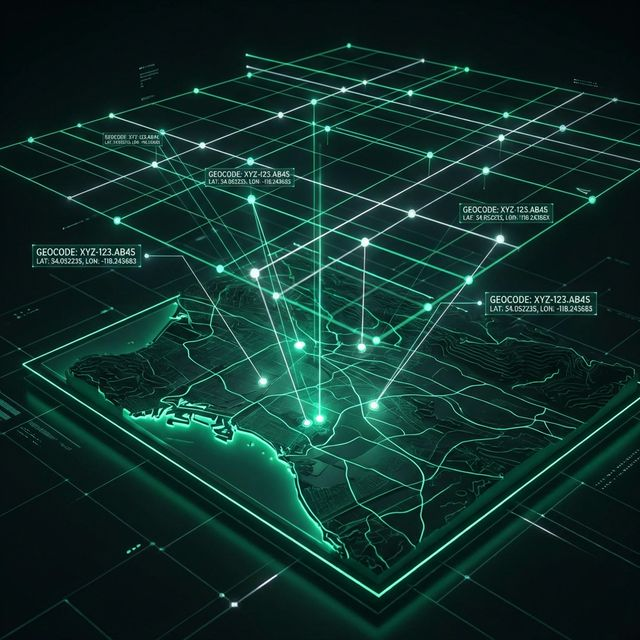

Exploring Unknowns
Defining Systems
Passionate Builder | Anime Enthusiast | Bibliophile | Working on the future of location intelligence.
The Compass
I find my peace in nature and my purpose in building systems that solve real-world complexities.
Based in Coimbatore, I am a developer who believes every project is a journey into the unknown. When I'm not architecting code, you'll find me lost in the worlds of Anime or deep within the pages of a compelling book. These stories fuel my creativity and drive my passion for making impactful projects.
As an Innovation Ambassador and NSS Volunteer, I'm dedicated to leveraging technology for social good, blending engineering precision with a storyteller's heart.

Digital Identity
mode: "Active_Exploration"
fuel: ["Anime", "Books", "Code"]
02. Current Expedition

Geocoded Addressing Systems
Architecting a next-generation spatial framework to redefine location intelligence beyond basic coordinates.
- Spatial Data Optimization
- High-Precision Mapping
02. Selected Works
 DAA
DAA
Marv Strike: AI Strategy Engine
An advanced turn-based strategy game featuring complex AI decision-making. Implemented recursive Divide & Conquer and Greedy algorithms for optimal move selection and combat logic.
 DSA
DSA
Dynamic Knowledge Graph
Engineered a self-updating graph system using high-level data structures. Capable of answering complex queries dynamically.
 MedTech
MedTech
Tremor detection
Integrates EMG sensors and Servomotors to provide real-time neuromuscular assistance for patients.
 Systems
Systems
CA Architecture Optimizer
Computer Architecture project focused on system performance. Leveraged PostgreSQL for managing architectural simulation data.
03. Technical Arsenal
Hardware & Systems
Software & Logic
Innovation & Impact
Soft Competencies
04. Beyond the Code
Anime & Stories
I find immense inspiration in the complex narratives and visual artistry of anime. It teaches me about world-building and the importance of a strong "core logic" in any system. Some of my favorites involve intricate strategizing and futuristic concepts.
CURRENT_READING.log
- → "The Design of Everyday Things"
- → "The Pragmatic Programmer"
- → Science Fiction Anthologies
The Library
Reading is my way of exploring different dimensions of thought. From technical deep-dives to philosophical fiction, books are the blueprints I use to expand my mental architecture.